상품 사진 한 장에서 상세페이지까지
상품 사진을 올리고, 템플릿을 고르고, [생성]을 누르면 상세페이지가 채워집니다. 마음에 안 드는 이미지는 눌러서 바로 고칩니다. 이 설명서는 그 흐름 순서대로, 어느 화면의 어디를 누르는지 보여 줍니다.
한눈에 보기
프로젝트 하나가 상품 하나입니다. 프로젝트를 열면 처음 보이는 곳이 만들기 화면이고, 화면은 다섯 구역으로 나뉩니다.
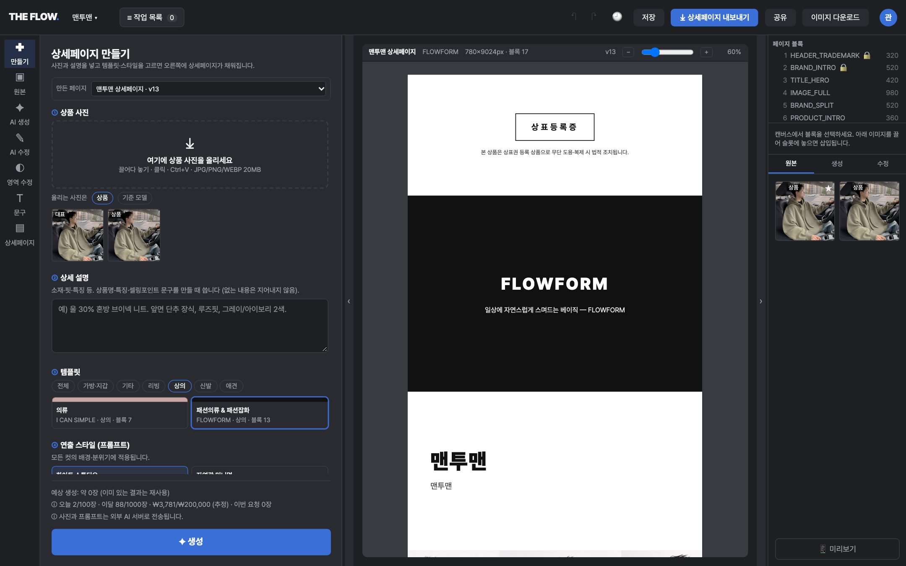
1 2 3 4 5 6- 1왼쪽 메뉴 — 만들기 · 원본 · AI 생성 · AI 수정 · 영역 수정 · 문구 · 상세페이지. 하는 일을 고르는 곳.
- 2도구 패널 — 고른 메뉴의 입력·옵션. 위에서 아래로 채우고 맨 아래 큰 버튼을 누릅니다.
- 3캔버스 — 결과가 보이는 곳. 만들기·상세페이지에서는 상세페이지가, 다른 메뉴에서는 고른 이미지가 보입니다.
- 4라이브러리 — 이 상품의 모든 이미지. 원본 · 생성 · 수정 탭으로 나뉘고, 끌어서 페이지 칸에 넣을 수 있습니다.
- 5작업 목록 — 생성·내보내기 진행 상황. 숫자는 진행 중인 작업 수입니다.
- 6상단 버튼 — 저장, 상세페이지 내보내기, 공유, 이미지 다운로드.
어디서 하나요?
하고 싶은 일로 찾아보세요.
| 하고 싶은 일 | 가는 곳 |
|---|---|
| 상세페이지를 처음부터 한 번에 | 왼쪽 메뉴 만들기 → 사진·설명·템플릿·연출 스타일 → [생성] |
| 페이지 안 이미지 한 장만 다시 | 캔버스에서 그 이미지에 마우스 → 오른쪽 위 ✎ 수정 |
| 블록 높이·여백·순서 바꾸기 | 상세페이지 메뉴 → 블록 클릭 → 테두리 선·동그란 손잡이 끌기 |
| 사진 추가·역할(상품/모델) 바꾸기 | 원본 메뉴 (만들기 ① 상품 사진에서도 가능) |
| 썸네일·디테일컷만 따로 몇 장 | AI 생성 메뉴 → 생성 유형 고르기 |
| 말로 이미지 고치기 ("배경만 흰색") | AI 수정 메뉴, 또는 ✎ 수정 창의 자연어 수정 |
| 특정 부분만 고치기·흐리게·지우기 | 영역 수정 메뉴, 또는 ✎ 수정 창의 영역 수정 |
| 상품명·셀링포인트 문구 만들기 | 문구 메뉴 |
| 상세페이지를 JPG로 받기 | 상단 상세페이지 내보내기 → 끝나면 작업 목록에서 받기 |
| 이미지 여러 장 ZIP으로 받기 | 상단 이미지 다운로드 |
| 오늘 몇 장 썼는지 | 맨 위 메뉴 사용량 |
1. 프로젝트 만들기
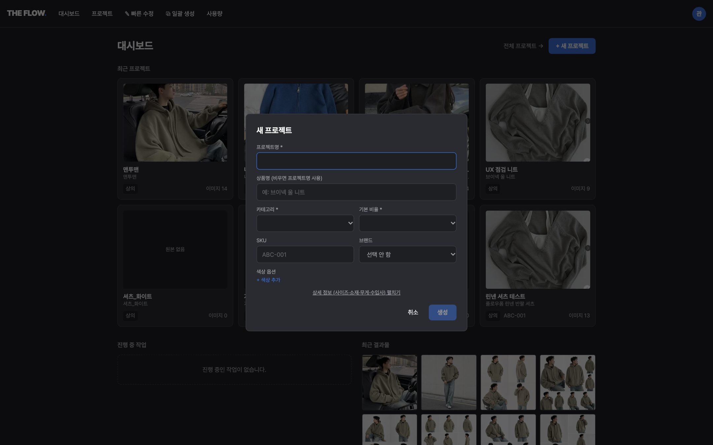
- 프로젝트명 · 카테고리 · 기본 비율은 꼭 채웁니다. 상품명을 비우면 프로젝트명을 씁니다.
- 색상 옵션을 넣어 두면 색상별 컷과 상세페이지 색상 칩이 자동으로 만들어집니다.
- 상세 정보 펼치기에서 사이즈·소재·무게를 넣으면 상세페이지 사이즈표·정보표에 그대로 들어갑니다.
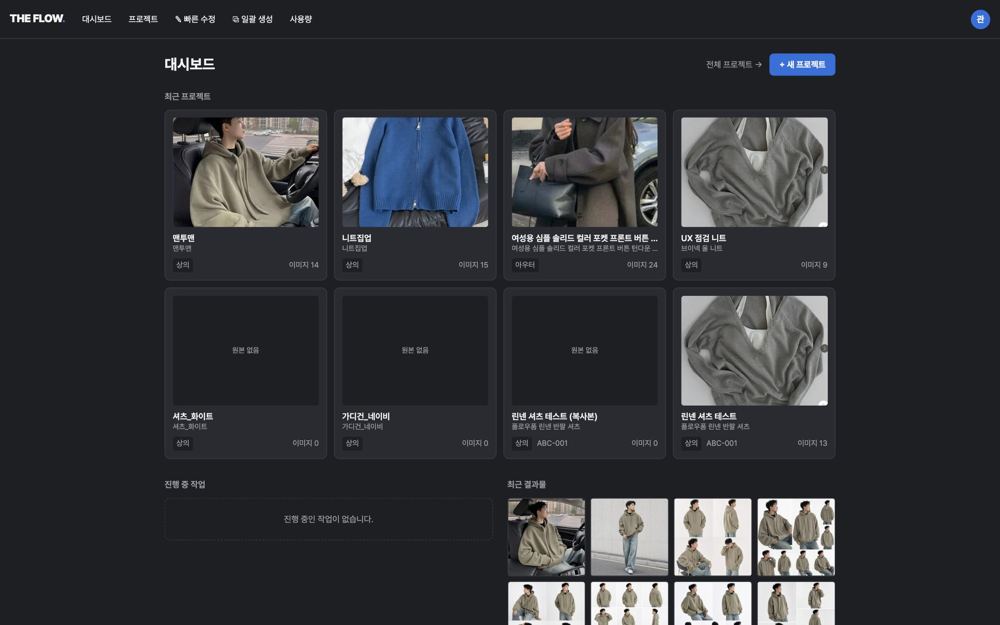
2. 만들기 · 생성
도구 패널을 위에서 아래로 채우면 됩니다. 템플릿을 고르는 순간 오른쪽 캔버스에 미리보기가 뜨고, [생성]을 누르면 그 자리에 이미지가 하나씩 채워집니다.
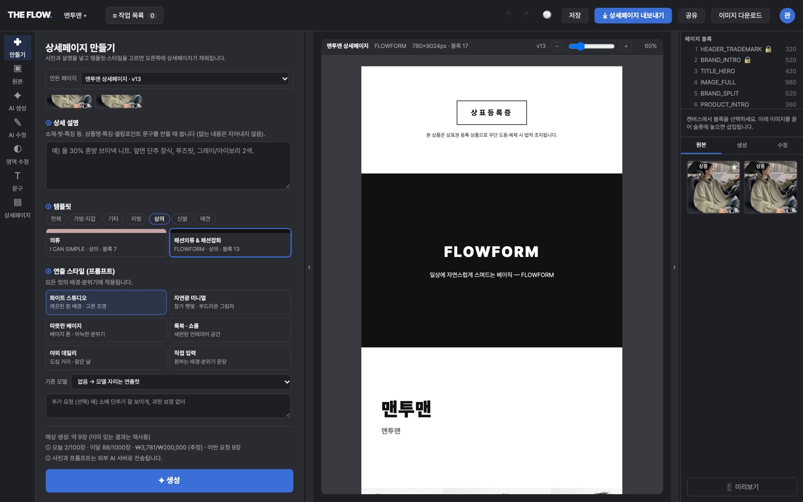
- ① 상품 사진 — 점선 상자에 끌어 놓거나, 눌러서 고르거나, Ctrl+V로 붙여 넣습니다. "올리는 사진은 상품 / 기준 모델"로 역할을 먼저 고르세요. 첫 상품 사진이 대표가 됩니다.
- ② 상세 설명 — 소재·핏·특징을 짧게 적습니다. 상품명·셀링포인트 문구를 만들 때 이 내용만 씁니다(없는 내용은 지어내지 않음).
- ③ 템플릿 — 카테고리 칩으로 거른 뒤 하나를 고릅니다. 오른쪽에 바로 미리보기가 뜹니다.
- ④ 연출 스타일 — 화이트 스튜디오, 자연광 미니멀 같은 배경·분위기를 고릅니다. 모든 컷에 똑같이 적용됩니다. 원하는 문장이 있으면 직접 입력.
- 기준 모델 — 모델 착용컷의 얼굴·체형 기준입니다. 없음이면 원본 사진 속 모델로 착용컷을 만들고, 원본에 사람이 없으면 자연스러운 모델로 만듭니다.
- 추가 요청 — 모든 컷에 붙는 한 줄 요청입니다. "다양한 포즈로"처럼 쓰면 장마다 다른 포즈로 나뉘어 적용됩니다(한 장에 여러 포즈를 넣지 않습니다).
- [생성] — 버튼 위에 예상 장수와 오늘 남은 한도가 보입니다. 누르면 캔버스의 빈칸이 "AI 생성 중…"으로 바뀌고 끝나는 대로 채워집니다. 다른 메뉴로 가도 계속 진행됩니다.
예전에 만든 페이지는 맨 위 만든 페이지 목록에서 다시 열 수 있습니다.
3. 상세페이지 다듬기
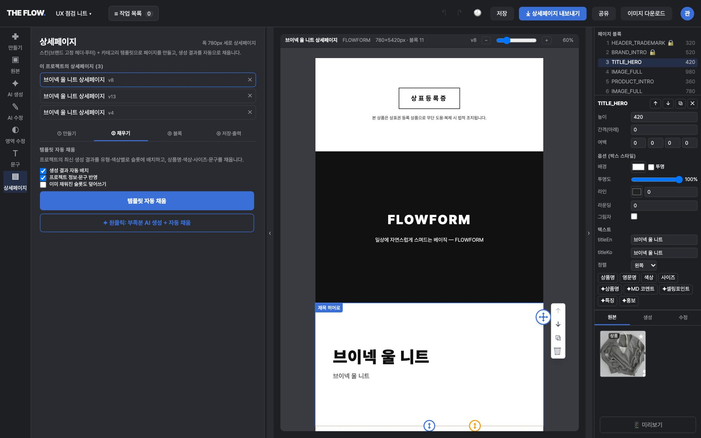
캔버스에서 끌어서 바꾸기
- ✥네 방향 화살표 (오른쪽 위) — 끌어서 블록 순서를 옮깁니다. 놓을 자리에 파란 줄이 생깁니다.
- ↕아래 테두리 가운데 — 블록 높이. 끄는 동안 값이 표시됩니다.
- ↔안쪽 점선 — 여백. 위·아래·양옆 선에 마우스를 올리면 손잡이가 나타납니다.
- ↕주황 손잡이 — 다음 블록과의 간격.
- 블록 옆 작은 막대: 위로 · 아래로 · 복제 · 삭제. 브랜드 고정 헤더·푸터(🔒) 쪽으로는 옮길 수 없습니다.
- 이미지 칸: 선택한 블록의 이미지를 끌면 보이는 위치가 바뀝니다. Ctrl/⌘+휠(트랙패드 핀치)로 확대·축소.
- 라이브러리 이미지를 칸에 끌어 놓으면 교체됩니다(칸 크기·위치는 그대로).
- 오른쪽 속성: 높이·간격·여백 숫자, 배경·투명도·라인·라운딩·그림자, 텍스트와 상품명·색상·사이즈 같은 자동 값 넣기.
- 왼쪽 패널 ② 채우기 → [템플릿 자동 채움]: 지금 있는 결과로 빈칸을 채웁니다. [원클릭: 부족분 AI 생성 + 자동 채움]: 모자란 만큼만 새로 만듭니다.
2초마다 자동 저장되고, 상단 🕘에서 이전 버전으로 돌아갈 수 있습니다. 단축키: ⌘Z 실행 취소 · ⇧⌘Z 다시 실행 · ⌘S 저장 · Delete 블록 삭제 · Esc 선택 해제.
4. 이미지 고치기 (✎ 수정 창)
페이지 안 이미지를 그 자리에서 고치는 창입니다. 오른쪽 위 탭 세 개 중 하나를 고르고, 결과는 아래 후보 줄에 쌓입니다. 마음에 드는 후보를 고르고 [이 이미지로 적용]을 누르면 칸에 들어갑니다. 원래 이미지는 지워지지 않습니다.
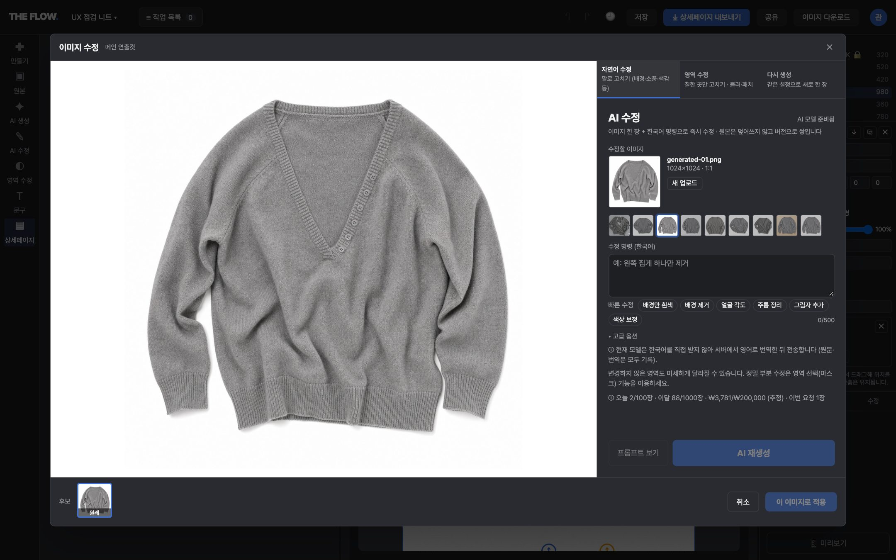
| 탭 | 언제 쓰나 | 하는 법 |
|---|---|---|
| 자연어 수정 | 배경·소품·색감을 말로 | "배경만 흰색"처럼 적고 [AI 재생성]. 빠른 수정 칩을 눌러도 됩니다. |
| 영역 수정 | 일부분만 · 흐리게 · 지우기 | 영역 선택(AI 재생성) 또는 수동 보정(블러·패치·복제). 아래 영역 수정 참고. |
| 다시 생성 | 같은 설정으로 한 장 더 | [같은 설정으로 다시 생성]. 처음과 같은 유형·스타일·비율·색상. |
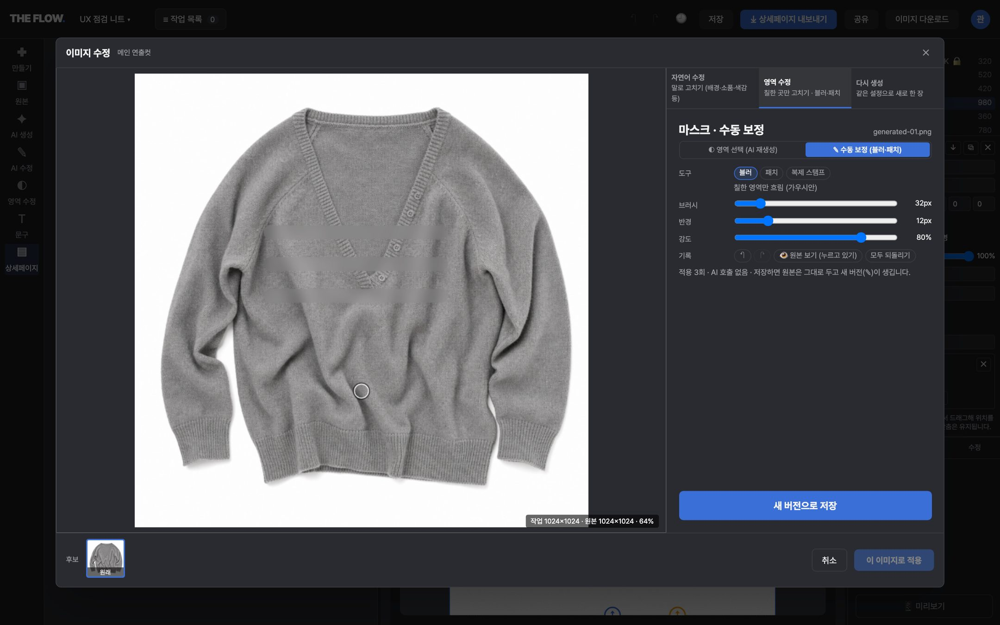
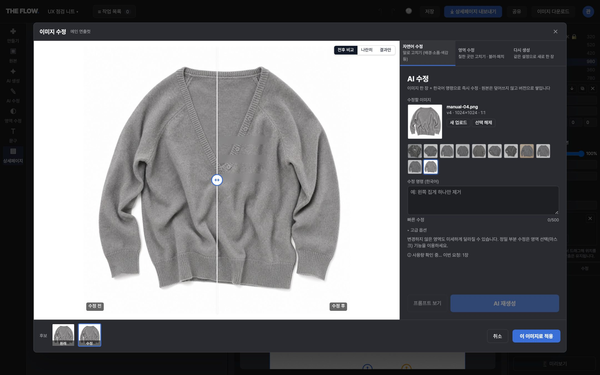
5. 내보내기 · 다운로드
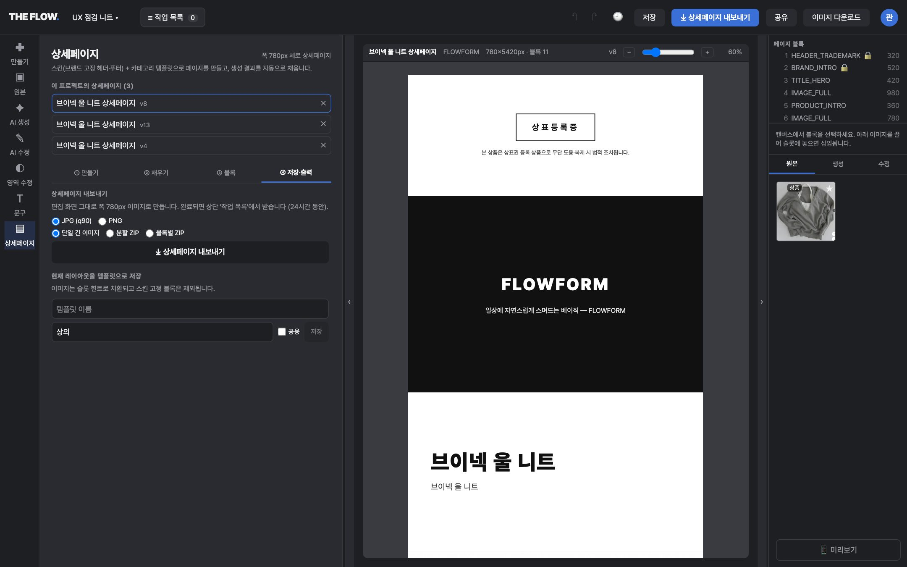
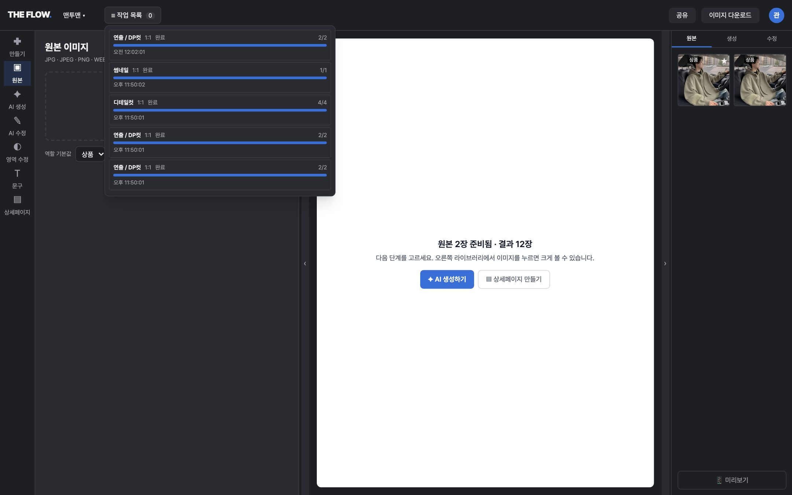
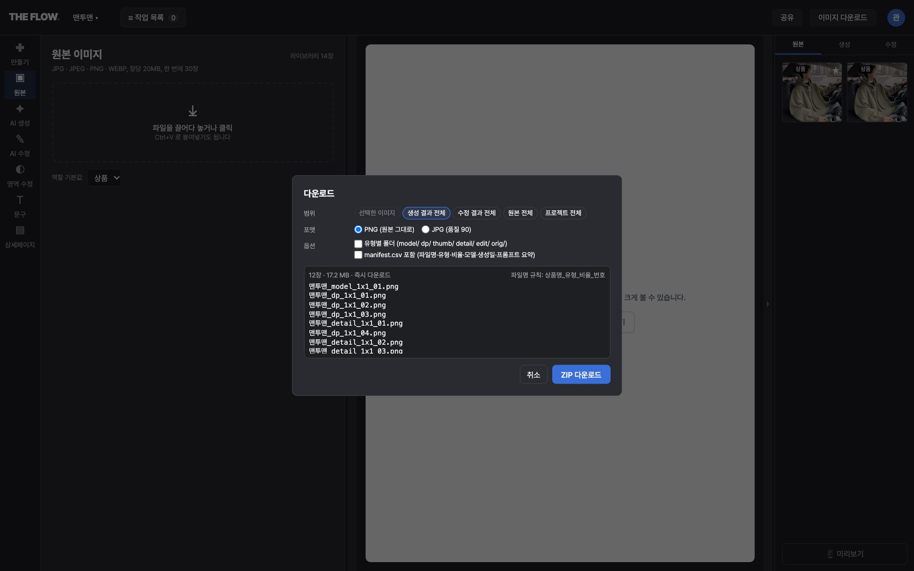
파일 이름은 상품명_유형_비율_번호.png 규칙으로 붙습니다. 20장 이하는 바로 받고, 그보다 많으면 작업으로 만들어져 작업 목록에서 받습니다.
원본
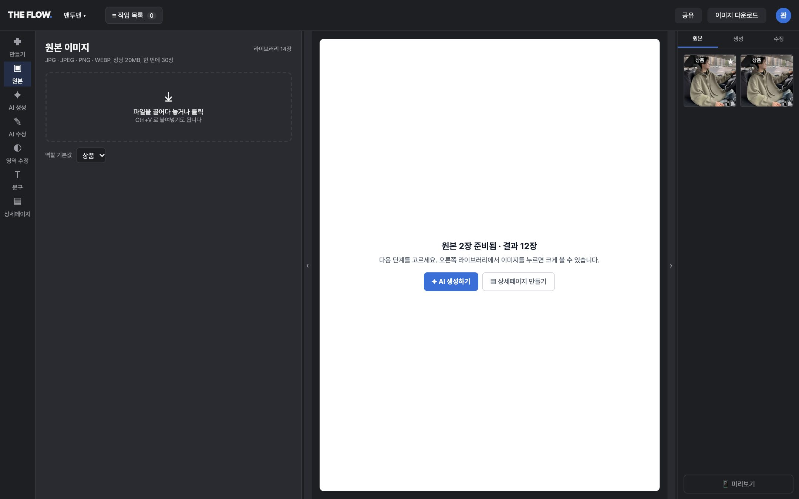
- JPG·PNG·WEBP, 장당 20MB, 한 번에 30장까지 올립니다.
- 역할 기본값을 먼저 고르세요. 상품 · 모델(기준 모델) · 참고.
- 올린 사진의 역할 변경·대표(★) 지정·순서 바꾸기·삭제는 오른쪽 라이브러리에서 합니다.
- 캔버스 가운데 버튼으로 바로 다음 단계(AI 생성하기 / 상세페이지 만들기)로 갈 수 있습니다.
AI 생성
만들기를 거치지 않고 원하는 유형의 컷만 따로 만들 때 씁니다.
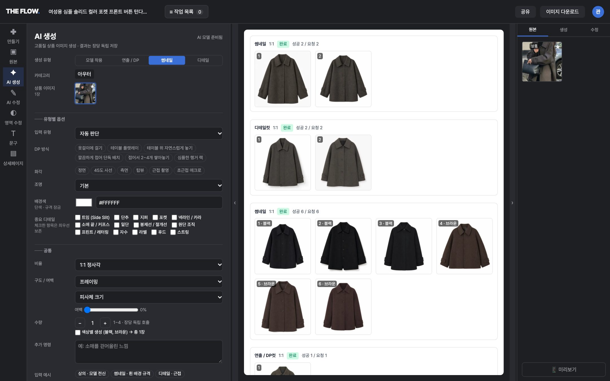
- 생성 유형 — 모델 착용 · 연출/DP · 썸네일 · 디테일.
- 입력 이미지 — 모델 착용은 기준 모델과 의류 이미지, 나머지는 상품 이미지.
- 유형별 옵션 — 포즈·구도·배경(모델 착용), DP 방식·화각·조명(연출), 배경색(썸네일), 디테일 부위. 중요 디테일에 체크한 부분은 최우선으로 지킵니다.
- 공통 — 비율, 구도/여백, 수량(1~4), 색상별 생성(프로젝트 색상마다), 추가 명령.
- [생성] 위의 프롬프트 보기로 실제로 보내는 문장을 확인할 수 있습니다.
AI 수정
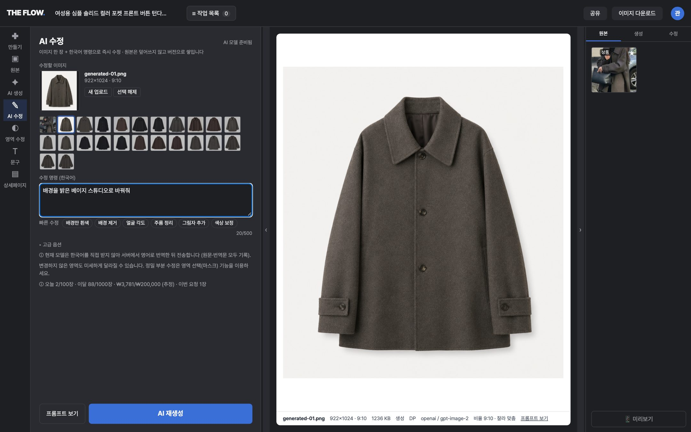
- 패널의 작은 사진 줄이나 오른쪽 라이브러리에서 수정할 이미지를 고릅니다.
- 수정 명령을 한국어로 적습니다. 예: "배경만 흰색 스튜디오로", "왼쪽 집게 하나만 제거".
- [AI 재생성]. 결과는 새 버전으로 쌓이고 원본은 그대로입니다. 라이브러리 수정 탭에서 볼 수 있습니다.
바꾸지 않은 부분도 조금씩 달라질 수 있습니다. 딱 그 부분만 고치려면 영역 수정을 쓰세요.
영역 수정
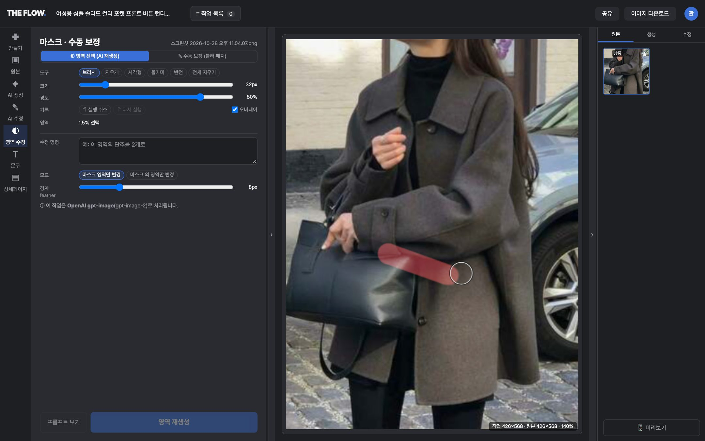
◐ 영역 선택 (AI 재생성)
- 브러시·지우개·사각형·올가미로 고칠 곳을 칠합니다.
- 수정 명령을 적고 [영역 재생성].
- 마스크 외 영역만 변경을 고르면 반대로 칠한 곳을 지킵니다.
✎ 수동 보정 (AI 호출 없음)
- 블러 — 칠한 곳만 흐리게. 반경·강도 조절.
- 패치 — 고칠 곳을 동그랗게 둘러 그린 뒤, 그 영역을 깨끗한 곳으로 끌어다 놓으면 그 무늬로 덮입니다. 끄는 동안 미리 보입니다.
- 복제 스탬프 — Alt+클릭으로 가져올 곳을 찍고 칠합니다.
- [원본 보기]를 누르고 있으면 원본과 비교, [새 버전으로 저장].
문구
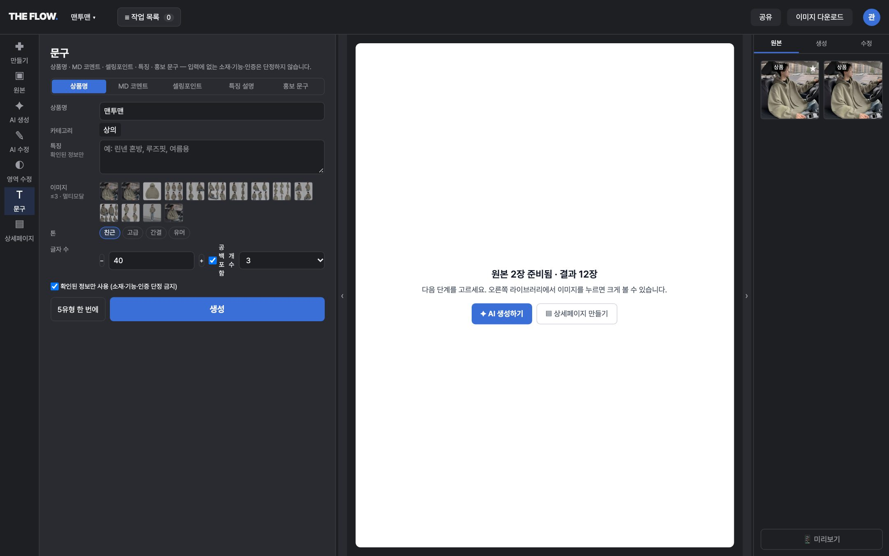
- 위 탭에서 종류(상품명 · MD 코멘트 · 셀링포인트 · 특징 설명 · 홍보 문구)를 고릅니다. 5유형 한 번에로 모두 만들 수도 있습니다.
- 특징 칸에는 확인된 정보만 적으세요. "확인된 정보만 사용"이 켜져 있으면 소재·기능·인증을 단정하지 않습니다.
- 이미지를 최대 3장 고르면 사진을 보고 씁니다. 톤·글자 수·개수를 정해 [생성].
- 저장한 문구는 상세페이지 블록의 ✦상품명 · ✦셀링포인트 같은 버튼으로 바로 넣습니다.
사용량 · 한도
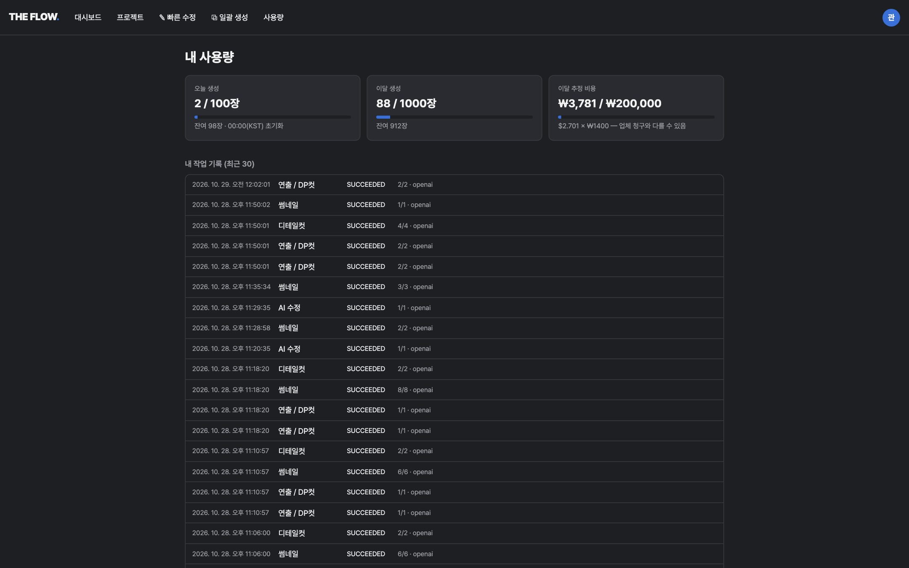
- 오늘 한도는 100장, 이달 한도는 1,000장, 이달 비용 한도는 ₩200,000입니다. 매일 0시(한국 시간)에 초기화됩니다.
- 한도의 80%를 넘으면 노란 경고가 뜨고, 다 쓰면 생성이 막힙니다. 늘리려면 관리자 콘솔 → 시스템 설정(전체) 또는 사용자(사람별).
- 비용은 장수 × 단가로 계산한 추정치입니다. 실제 청구는 OpenAI 콘솔에서 확인합니다.
막혔을 때
| 이럴 때 | 이렇게 |
|---|---|
| [생성] 버튼이 회색 | 버튼 위 노란 줄에 이유가 나옵니다. 보통 템플릿 미선택, 상품 사진 없음, 한도 초과. |
| "기준 모델을 선택하세요" | AI 생성의 모델 착용은 기준 모델이 필요합니다. 원본에서 모델 사진을 역할 '모델'로 올리거나, 관리자가 공용 모델을 등록합니다. 만들기에서는 없어도 원본 속 모델로 만듭니다. |
| 장마다 옷이 달라 보임 | 기준상품컷이 기준입니다. 라이브러리에서 기준상품컷을 확인하고, 이상하면 휴지통으로 보낸 뒤 다시 생성합니다. |
| 한 장에 여러 포즈가 모여 나옴 | 지금은 장마다 나눠 적용됩니다. 예전 결과라면 ✎ 수정 → 다시 생성. |
| 생성이 오래 멈춰 있음 | 장당 30~45초가 보통입니다. 작업 목록에 '대기'만 길게 보이면 관리자에게 알려 주세요(작업 처리기 확인). |
| 블러·패치가 안 보임 | 브러시 원이 이미지 위에 보이는지 확인하세요. 패치는 둘러 그린 뒤 그 영역을 끌어야 적용됩니다. |
| 내보내기 받기 링크가 없음 | 작업 목록에서 24시간 동안만 받을 수 있습니다. 지났으면 다시 내보내세요. |